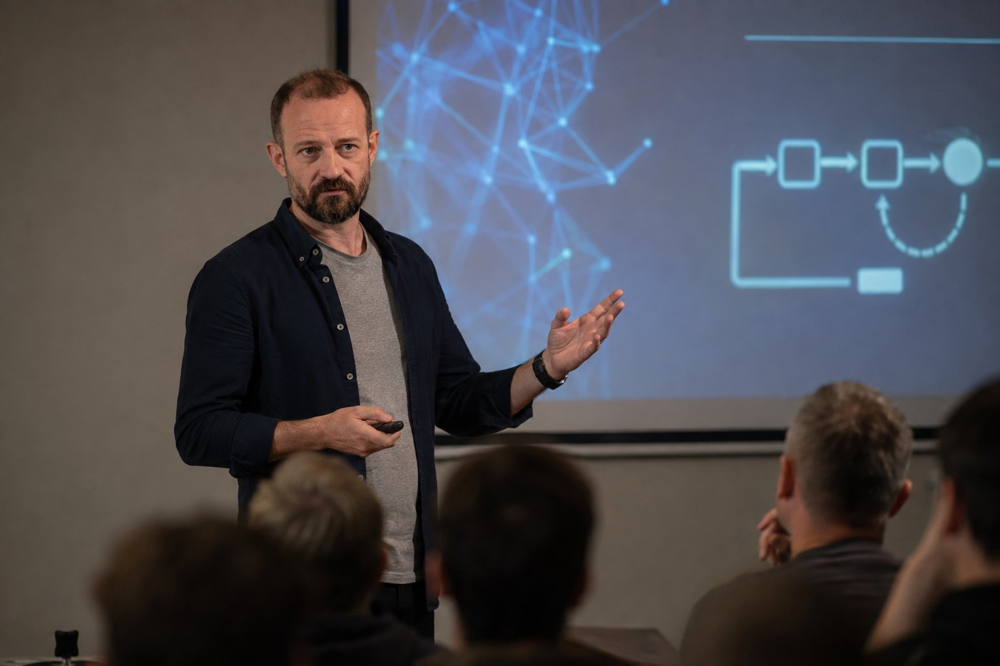

ИИ и боты
Практическое обучение, промпты, прототипирование и автоматизация после разбора процесса.
Обсудить задачу →Инженер человеческих систем
Я Андрей Индыков: физик по образованию, 15 лет в IT, преподаватель и методолог. Помогаю учиться, осваивать ИИ и разбирать повторяющиеся сбои без тумана и обещаний «починить всю жизнь».

Четыре входа
Выберите текущую задачу. Каждое направление ведёт на свою страницу и не смешивает аудитории.
Математика, физика, информатика, ОГЭ/ЕГЭ, диагностика и безопасные промпты.
Перейти в школу →Практическое обучение, промпты, прототипирование и автоматизация после разбора процесса.
Обсудить задачу →Соционика и модели коммуникации как рабочие гипотезы, а не ярлыки или диагноз.
О типировании →Медитации, рефлексия и короткие самостоятельные инструменты для наблюдения за состоянием.
Получить практику →Рабочая логика
Подход один и тот же для учёбы, продуктивности и внедрения ИИ: увидеть систему, выбрать узел и проверить изменение в реальности.
Что происходит сейчас и как устроена система.
Одна конкретная точка, где возникает повторяющийся сбой.
Действие, которое можно выполнить и проверить.
Смотрим на результат, уточняем гипотезу и закрепляем рабочее.

ИИ без магии
Я обучаю взрослых практическому применению ИИ, создаю промпты, тесты, ботов и образовательные программы. Не продаю «волшебную кнопку»: хороший результат начинается с ясной постановки задачи.
Бесплатная библиотека
Пять аккуратных PDF: можно скачать, распечатать и держать рядом во время занятий.
Степени, формулы сокращённого умножения, уравнения и системы.
Скачать → PDF · 7–8 классТреугольники, четырёхугольники, площади и Пифагор.
Скачать → PDF · стартБиты, байты, алфавит, объём и системы счисления.
Скачать → PDF · стартМини-синтаксис, схемы решения и частые ошибки новичка.
Скачать → PDF · 7–8 классМеханика, давление, работа, мощность и тепловые явления.
Скачать →Статьи и разборы
Пять образных вопросов, мгновенная расшифровка и повод для рефлексии.
Кокология · интерактивный тестИгровой сценарий о смысле, плане, поддержке и эксперименте.
Учёба · ИИРежим подсказки, три проверки ответа и готовый диалог с нейросетью.
МетодикаКак отличить занятость от тренировки навыка и вести журнал ошибок.
Обо мне
Около 15 лет я работал в IT — от инженера-программиста до руководителя отдела. Преподавал информатику в ВГУ и ВГТУ, с 2009 года занимаюсь типологиями и НЛП, создаю тесты, рабочие тетради и цифровые продукты.
Соционику, НЛП и практики самонаблюдения использую как карты и гипотезы — не как медицинскую диагностику. Там, где вопрос требует психотерапевтической или медицинской помощи, сайт её не заменяет.

С чего начать
Напишите слово «СФЕРЫ». Я подскажу, с какой диагностики или материала начать — без обязательства покупать.